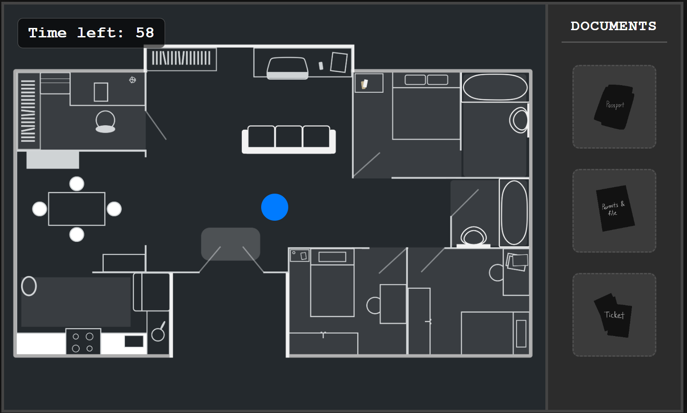
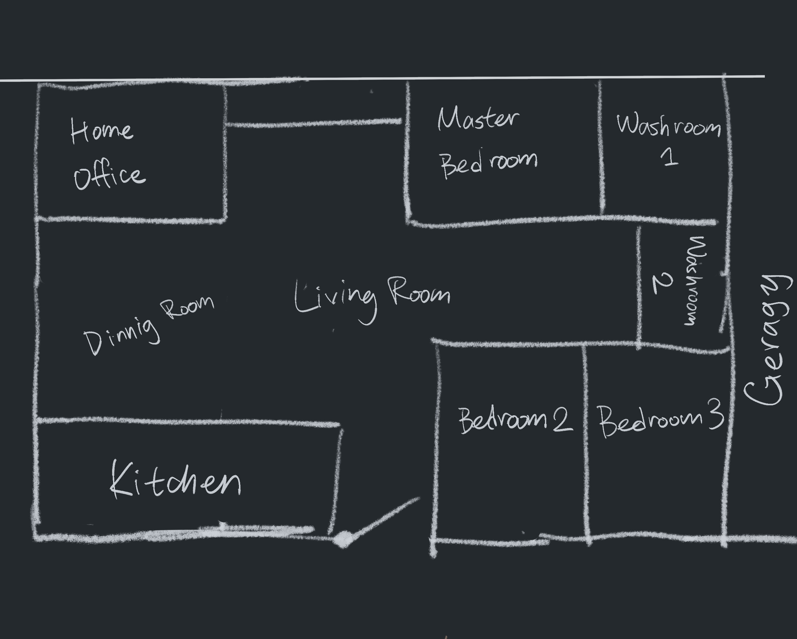
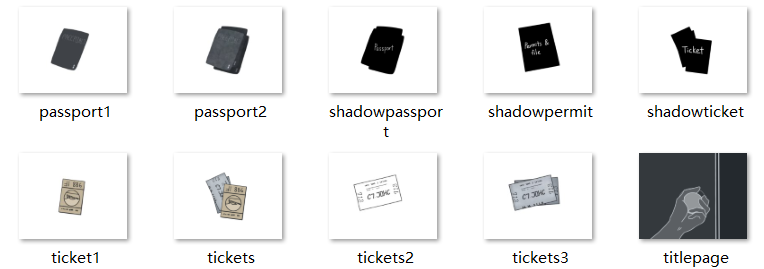
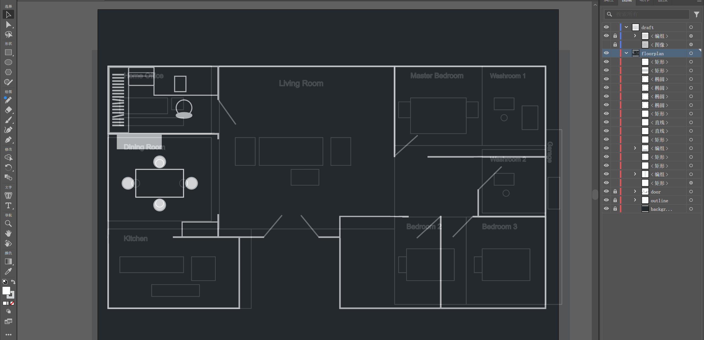
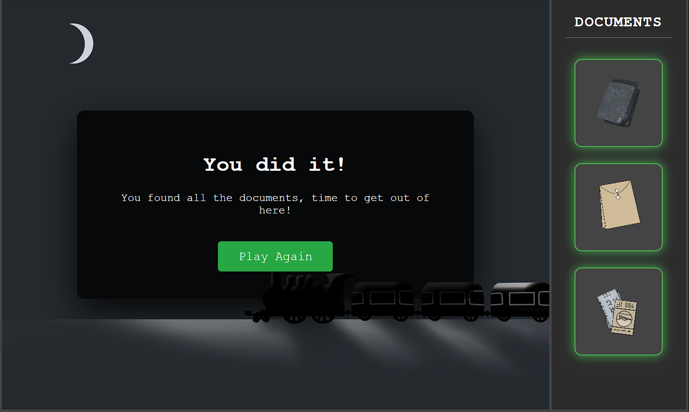
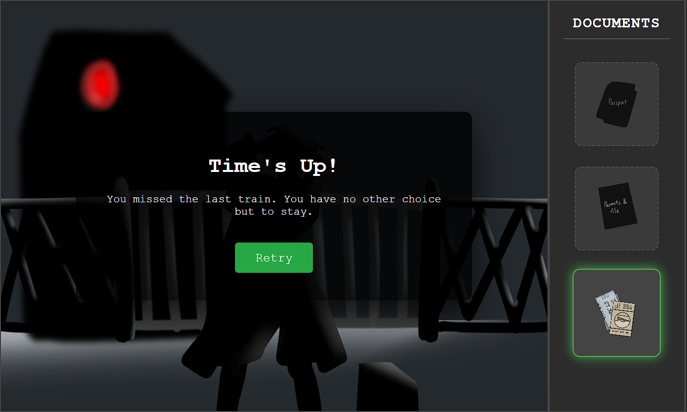

Interactive Narrative Web Design

An interactive narrative based on The Acharnians, exploring anti-war themes through derivative works. This is one of the digital platform interactive experiences, about the one of the main character: Mateo, fail to protest the war, deciding to getaway from his country to protect his family members. But before that, he need to the nessesary documents for flee.
Detailed Design Process
1. What kind of interaction do I want?
I used a dark colour scheme as the foundation because I wanted players to experience the tension of an escape during this interaction. After testing, I think this top-down puzzle game—which resembles a floor plan—is a good fit for this story.

2. Goal of the Game
The objective of the game, and of this part of the narrative, is to “find three important documents.” The images shown are several prop illustrations I created.

3. Visual Design Refinement
This stage will determine whether or not players are able to fully engage with the game and encounter important story points. I made the decision to use Adobe Illustrator to produce extremely polished illustrations while keeping the dark, minimalist style.

4. Intro of the Game
Additionally, a well-design prologue can help players become fully immersed in their roles within the game. I used a picture of a hand resting on a doorknob, ready to open the door, to design the game's original interface. Additionally, by giving players a chance to get ready, this strategy avoids confusion regarding the impending interactions.

5. Ending of the Game
After players complete the game objectives, I need to direct them to the next location to experience additional content, but I still need to include a "phase-end" design for this platform.
As a result, I've included two endings after the mini-game is completed.
> If the player successfully locates all documents, a train travelling by moonlight will appear, indicating the next storyline location.
> If the player fails to collect all documents, Mateo (the main character) will be trapped by a border and unable to escape. A prompt will then appear, encouraging the player to try again.

